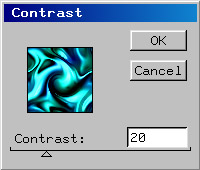
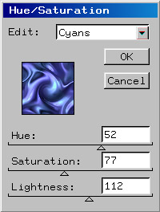
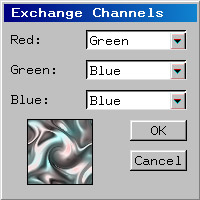
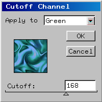
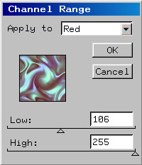
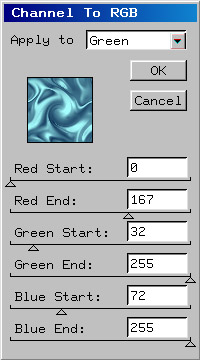
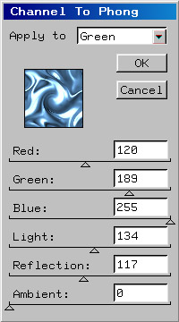

Impact Texture Studio Online Manual
Color Menu
File menu
Edit menu
Adjust menu
Generation menu
Distortion menu
Blur menu
Mix menu
Color menu
Misc menu
Changes the contrast of the selected layer

Contrast: Amount of contrast
Hue/Saturation
Changes color range of (a part of)
the color spectrum

Edit: Part of the color spectrum
to edit
Hue: Shift on the color circle
Saturation: Shift from the center
of the color circle
Lightness: Intensity of the colors
Invert
Inverts the selected layer
Exchange channels
Exchanges Red, Green and Blue channels

Red: Source of the new red channel
Green: Source of the new green channel
Blue: Source of the new blue channel
Cutoff channel
Cuts off maximum channel range

Apply to: Channel to cutoff
Cutoff: Maximum range of the selected
channel
Range channel
Changes active range of a channel

Apply to: Channel to specify range
Low: Starting value of the range
High: Ending value of the range
Channel to RGB
Converts a channel to a RGB layer

Apply to: Channel to use as source
Red Start: Minimum red value
Red End: Maximum red value
Green Start: Minimum green value
Green End: Maximum green value
Blue Start: Minimum blue value
Blue End: Maximum blue value
Channel to phong
Converts a channel to a RGB layer
using phong illumination

Apply to: Channel to use as source
Red: Amount of red
Green: Amount of green
Blue: Amount of blue
Light: Light applied to this layer
Reflection: Amount light reflected
by this layer
Ambient: Ambient light